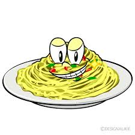

Ingredientes 200g de pasta 200ml de crema 100g de queso 1 diente de ajo Mantequilla y sal Preparación Cocer la pasta. En una sartén, sofreír ajo y mantequilla. Añadir crema y queso. Mezclar con la pasta y servir.  Me gusta esta receta